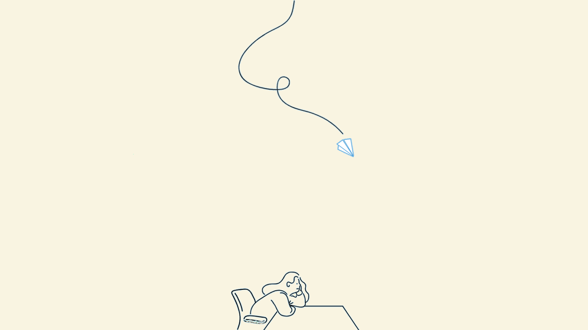

느린학습자
무엇인가요?
느린학습자(경계선지능인)란 지능지수(IQ) 71~84사이에 존재하는 사람들을 말합니다.
느린학습자 아동들은 일반적인 아동들이 경험하는 교육과 사회화 과정에서 어려움을
겪고 있지만 이에 대해 추가적인 중재가 있다면 이를 충분히 극복해 나갈 수 있습니다.
충북 사랑의 매듭에서는 느린학습자의 어려움을 공감하고
느린학습자 진단과 맞춤형 학습 및 소통공간 서비스를 운영 중에 있습니다.
느린학습자를 위한 작은 소통공간
느린학습자 부모들과 소통하기
느린학습자(경계선지능인)란 지능지수(IQ) 71~84사이에 존재하는 사람들을 말합니다.
느린학습자 아동들은 일반적인 아동들이 경험하는 교육과 사회화 과정에서 어려움을
겪고 있지만 이에 대해 추가적인 중재가 있다면 이를 충분히 극복해 나갈 수 있습니다.
충북 사랑의 매듭에서는 느린학습자의 어려움을 공감하고
느린학습자 진단과 맞춤형 학습 및 소통공간 서비스를 운영 중에 있습니다.
링크위드 회의
링크위드 회의
링크위드 회의
상호명: 충북 사랑의 매듭
기획팀: 강제덕, 김예빈, 이지현 | 개발팀: 김지훈, 신재빈 | 디자인팀: 김성애, 김연수
한국교통대 학생들이 제작한 느린학습자 사이트입니다.